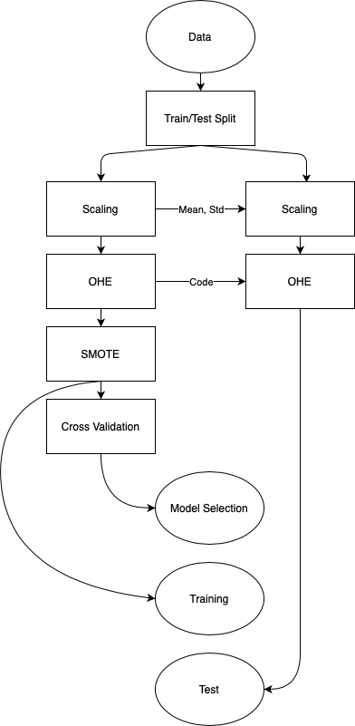

Pipelines¶
Before getting to our prediction algorithm, our data must go through different processes, in different subsets. The order of such processes is often misunderstood. For this reason, we are going to start from a picture summing up the whole process, and go through it step by step.

Data: It is our starting data as we read it from the filesystem.
Training/Test Split: We take away a portion of our data, that we will use to test our model at the end of the process. This portion of data must reflect the underlying distribution as good as possible. (Sampling must be stratified to retain proportions).
Scaling: We change the range of our data. If this is a normalization, we compute the statistics over the training set, and use them to normalize the test set.
OHE: We encode our catecorical data into a presence matrix. Again, we build the dictionary of possible values from the training set, and apply it on the test set. Values that are only seen in the test set need to be handled (i.e. dropped, Na)
SMOTE: We perform oversampling of our data. We only perform oversampling on the training dataset. We need to keep the test set unchanged from the distribution point of view.
Cross Validation (Model Selection): We perform model selection jointly with cross-validation. We evaluate different configuration of the same model on k disjoint subsets of our training sample. We take the configuration with the lowest average error (highest average metric) on the k folds.
Training: Now that we discovered our “best” model, we can train it from scratch using the whole training set provided.
Test: We assess the generalization power of our model by evaluating it on the test set, which was never shown before to the model.
Training-Test Dataset Split¶
To make the code more compact and readable, we are going to use sklearn’s pipeline object to create a reusable pipeline of actions.
The first step is to put aside a small portion of the dataset, and call it our test data.
import pandas as pd
from sklearn.model_selection import train_test_split
df = pd.read_csv('./dataset/online_shoppers_intention.csv')
# Stratified by default
df_train, df_test = train_test_split(df, test_size=0.2)
x_train, y_train = df_train.drop(columns='Revenue'), df_train['Revenue']
print(f'training data shape: {df_train.shape}\t\ttest data shape: {df_test.shape}')
df.head()
training data shape: (9864, 18) test data shape: (2466, 18)
| Administrative | Administrative_Duration | Informational | Informational_Duration | ProductRelated | ProductRelated_Duration | BounceRates | ExitRates | PageValues | SpecialDay | Month | OperatingSystems | Browser | Region | TrafficType | VisitorType | Weekend | Revenue | |
|---|---|---|---|---|---|---|---|---|---|---|---|---|---|---|---|---|---|---|
| 0 | 0 | 0.0 | 0 | 0.0 | 1 | 0.000000 | 0.20 | 0.20 | 0.0 | 0.0 | Feb | 1 | 1 | 1 | 1 | Returning_Visitor | False | False |
| 1 | 0 | 0.0 | 0 | 0.0 | 2 | 64.000000 | 0.00 | 0.10 | 0.0 | 0.0 | Feb | 2 | 2 | 1 | 2 | Returning_Visitor | False | False |
| 2 | 0 | 0.0 | 0 | 0.0 | 1 | 0.000000 | 0.20 | 0.20 | 0.0 | 0.0 | Feb | 4 | 1 | 9 | 3 | Returning_Visitor | False | False |
| 3 | 0 | 0.0 | 0 | 0.0 | 2 | 2.666667 | 0.05 | 0.14 | 0.0 | 0.0 | Feb | 3 | 2 | 2 | 4 | Returning_Visitor | False | False |
| 4 | 0 | 0.0 | 0 | 0.0 | 10 | 627.500000 | 0.02 | 0.05 | 0.0 | 0.0 | Feb | 3 | 3 | 1 | 4 | Returning_Visitor | True | False |
By default, the train_test_split function makes use of the y argument to perform stratified sampling. This means that we are sampling out a test set from our starting data, which keeps the class proportions intact. This is of utmost importance since it is the necessary condition to have a valid test score of our model.
Column Transformer¶
For all those actions that require statistics computed column-wise, we use the ColumnTransformer object, in which we can insert those procedures like Encoding and Scaling.
from sklearn.compose import ColumnTransformer
from sklearn.preprocessing import OrdinalEncoder, MinMaxScaler, OneHotEncoder
textual_columns = ['Month', 'VisitorType', 'Weekend']
categorical_columns = ['Month', 'OperatingSystems', 'Browser', 'Region', 'TrafficType', 'VisitorType', 'Weekend']
numerical_columns = ['Administrative', 'Administrative_Duration', 'Informational', 'Informational_Duration', 'ProductRelated', 'ProductRelated_Duration', 'BounceRates', 'ExitRates', 'PageValues']
column_transformer = ColumnTransformer([
('OrdinalEncoder', OrdinalEncoder(), textual_columns),
# ('MinMaxScaler', MinMaxScaler(), numerical_columns),
# ('OneHotEncoder', OneHotEncoder(), categorical_columns),
],
remainder='passthrough'
)
Pipeline¶
We can then inset the column transformer inside a pipeline alongisde the oversampling technique that we desire, and the classification algorithm (here we use a Random Forest as an example)
from imblearn.pipeline import Pipeline
from imblearn.over_sampling import SMOTENC
from sklearn.ensemble import RandomForestClassifier
categorical_features = ['Month', 'OperatingSystems', 'Browser', 'Region', 'TrafficType', 'VisitorType', 'Weekend']
categorical_indices = [c in categorical_features for c in df_train.columns]
clf = Pipeline(
steps=[
('ColumnTransformer', column_transformer),
('SMOTENC', SMOTENC(categorical_features=categorical_indices)),
('Classifier', RandomForestClassifier())
])
GridSearch & CrossValidation¶
GridSearch is one of many approaches to hyperparameter optimization or model selection. It is an exaustive search of a predefined subset of hyperparameters (values for continuos parameters are implicitly discretized). The algorithm is then trained with each n-uple in the cartesian product of the sets of each parameter, and is evaluated on a held-out validation set.
Since we are also doing CrossValidation, each hyperparameter configuration is evaluated on each of the k folds in which we split our training set.
from sklearn.model_selection import GridSearchCV
# Here we define the subset of parameters to use in the gridsearch model selection technique
param_grid = [
{
'Classifier__random_state': [42],
'Classifier__n_estimators': [10, 50, 100]
}
]
# And here we put together every piece of the pipeline to create a reusable structure in which we can plug in different
# Models and transformers without going through the effort of writing again a big bunch of code
# This is commented for time-resource reasons
# linear_search = GridSearchCV(clf, param_grid, cv=5, n_jobs=6).fit(x_train, y_train)
# linear_search.cv_results_